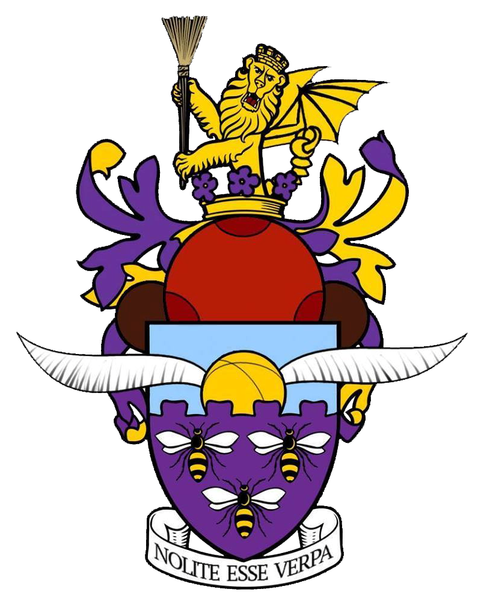

History
JK Rowling invented quidditch in Manchester, but the muggle version of the game has only graced this hallowed city relatively recently.
The Manchester University Quidditch Club was founded in its current form by Ictor Stripe in September 2014. Back then the main team was known as the “Manchester Mandrakes”, but this team name only had one outing. Five members of the club represented the MUQC against Chester, resulting in a victory for Manchester with the help of a few Team UK players.
In January 2015, Robert Naylor became President. He oversaw the changing of the team name to the current “Manchester Manticores”. Under the coaching of Philomena Chenne, who had experience playing quidditch for Simon Fraser University in Vancouver, the team became a more cohesive force. The first competitive outing in April at the 2015 Whiteknights III only resulted in one victory against Norwich Nifflers, but the community was impressed by how far Manchester had come.
During May, Manchester’s home tournament “The Cottonopolis Cup” was contested for the first time in Platt Fields Park. Chester overcame their previous loss to Manchester by taking the trophy and have held it ever since. UCLAN and Chester were the only teams to attend the first Cottonopolis, but since the tournament has become a staple of North West quidditch. For an account of the Second Cottonopolis Cup we’d recommend “From Skates to Brooms” on Youtube.
In May 2016 Hugh Phipps took over as President of the MUQC. Under his leadership Manchester consistently sent full rosters to major tournaments for the first time, resulting in the best competitive results ever for the club.May 2017 saw the current President Joshua Fogg come to the throne, and this year so far has seen record numbers attending practices. Due to the hard work of the committee the club were able to start a second team, the Manchester Minotaurs, who joined the Manticores in competing at the QUK Northern Cup.
Long may they reign, and long live the Manchester University Quidditch Club!
A short history of MUQC, originally written by Robert Naylor.